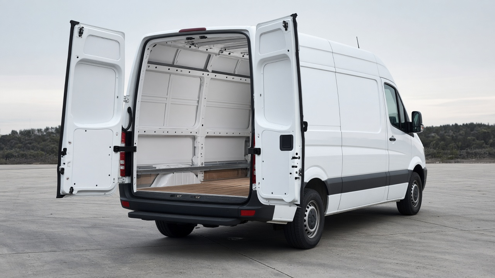
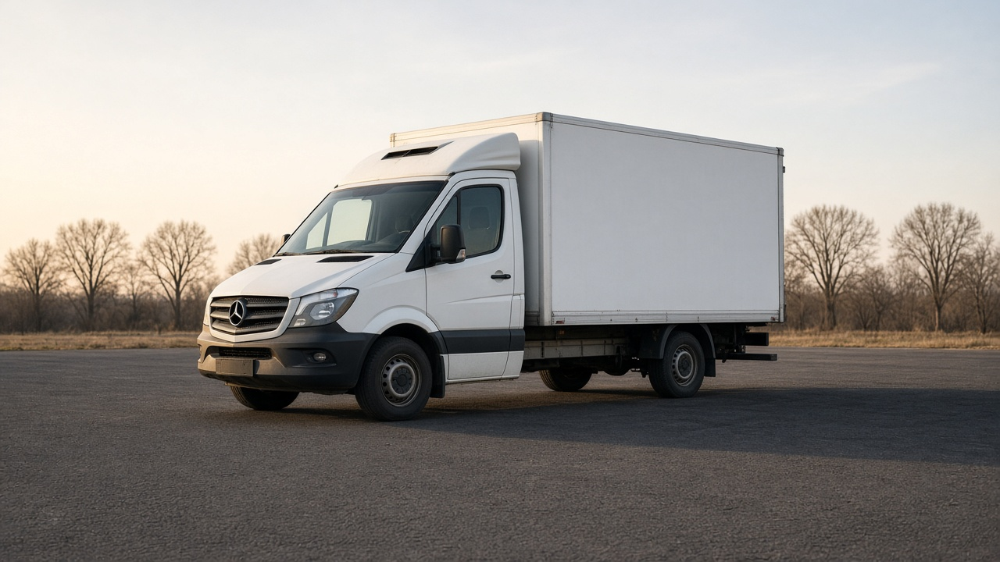

The order is still open, the truck has not been released from the consignee, or the truck is held until a date.
One order holds the truck, the rate confirmation, the BOL, the POD, and the invoice.
The broker, the truck, the driver, both stops, the miles, the hours, the rate, and the driver pay sit on that order. A skipped step does not save.
The morning board
The dispatch day
The broker saw the late pickup first.
The miss is already in the open order. The desk finds it after the broker does.
Each sent a rate confirmation on the same truck.
The truck is not rolling, the order still says on route to the shipper, and the broker is already calling.
The rate confirmation names one pickup. The driver was sent to another.
The consignee signed. The picture is in a text. The invoice has not been issued from the order.
The freight is off at the consignee. The status was not moved. The next load never sees the truck.
Availability
Available means the truck has been released.
A truck is On route, Not available, Available, or held until a date. Every change keeps who set it and when. Dispatch enters the pickup ZIP and a distance. Cycle returns only Available trucks inside that radius, with size, owner, driver, and phones. A hold keeps the truck with one dispatcher.

On route
The truck is moving.Not offered for the next pickup.
Not available
Arrived at the consignee.The freight may be off. The truck is not back on the board until it is released.
Available
Released.Inside the radius, and the freight fits the door and the capacity.
Held
Out until a date.Kept for one broker. Released when that date arrives.
The order
A skipped step does not save.
Broker, truck, driver, both stops, dates, pieces, weight, miles, hours, reference, rate, and driver pay. The truck follows the order: On route while it is moving, Not available once it has arrived at the consignee.
- 01CreatedOpened on a truck that is Available.
- 02To the shipperOn route, then arrived.
- 03To the consigneeOn route, then arrived.
- 04Invoice issuedFilled from this order. Paid or Not paid.
- 05Order paidThe same number as the trip.
A status out of sequence does not save.
Brokers, shippers, and consignees are one book: name, contact, phone, email, MC, and more than one address. The order takes the broker and both stops from that book, so the rate confirmation and the dispatch name the same dock.

Broker, truck, driver.
Pickup and delivery, from the book.
Pieces, weight, miles, hours.
Rate, driver pay, and what is left.
On a moving trip
The dispatcher decides.
While a trip is moving, a signal shows the miss. The person still chooses what to do. A status change can be sent to the broker without a new email written by hand.
Pickup is close. The order still says Created.
The step has not moved, and the appointment is passing.
The point on the order, the Google link, or Macropoint stopped updating.
The truck arrived. The proof is not on the order.
The freight is off. The bill has not been raised from the order.
A status out of sequence does not save.
On route while moving. Not available after arrival at the consignee.
The date arrives and the truck is released back to the board.
Raising the bill sets the order to Invoice issued.
Who moved a status, from what, and when, stays on the log.
Also on the order: a point of its own, a Google link stored as coordinates, or Macropoint; the trip monitor and the map; miles and hours between ZIPs; the reserve, the actual start, and the status log. The same records cut as reports by dispatcher, by truck, and by broker.
Reports
What slowed the desk.
The morning board is the start. The cut that matters is the person, the truck, and the broker.
The shift
Loads moved, steps that sat, paper that arrived late.
The unit
Time available, time held, loads it actually took.
The customer
How they pay, and how often the bill is cut.
In your office
Set up around your trucks and your people.
The work is the system and putting it in. One to three months, set by the scope. The screens are in English. We look at how a load is accepted, how a truck is chosen, and how the paper and the money move. The proposal comes after that.
Cycle TMS has been in service since 2018. Andrii Karpachov, Chief Technology Officer of Unique for Logistics LLC, designed it with his team.
A driver app can be added and is quoted on its own.
Show us how you dispatch today.
Company, and where a load breaks between the broker call and the invoice. We answer with a review. The commercial proposal comes after the scope is known.